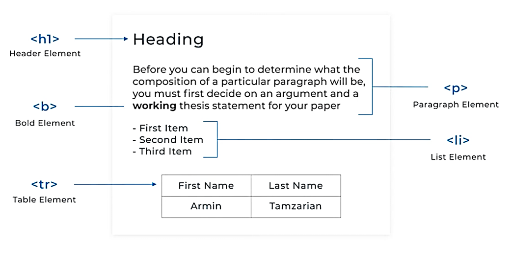
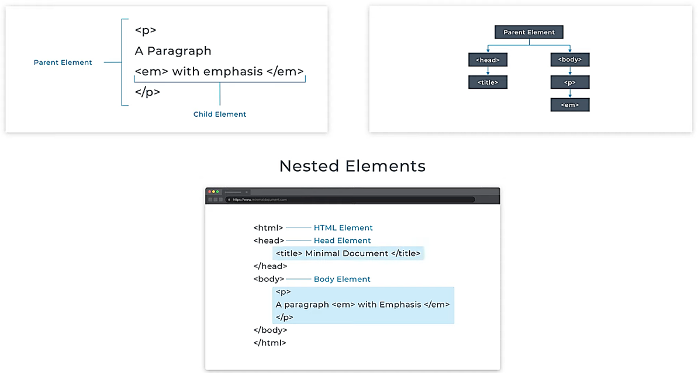
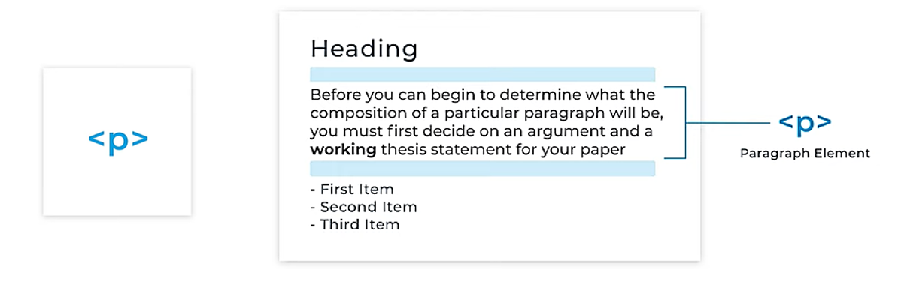
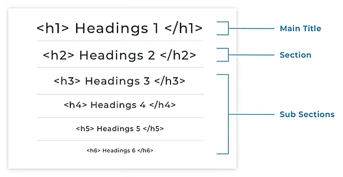
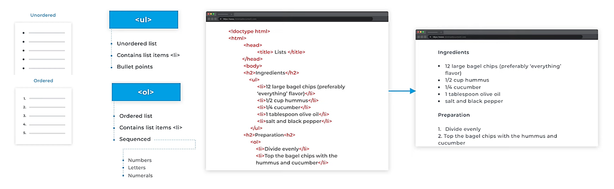
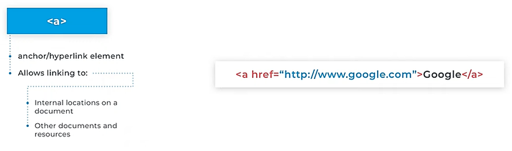
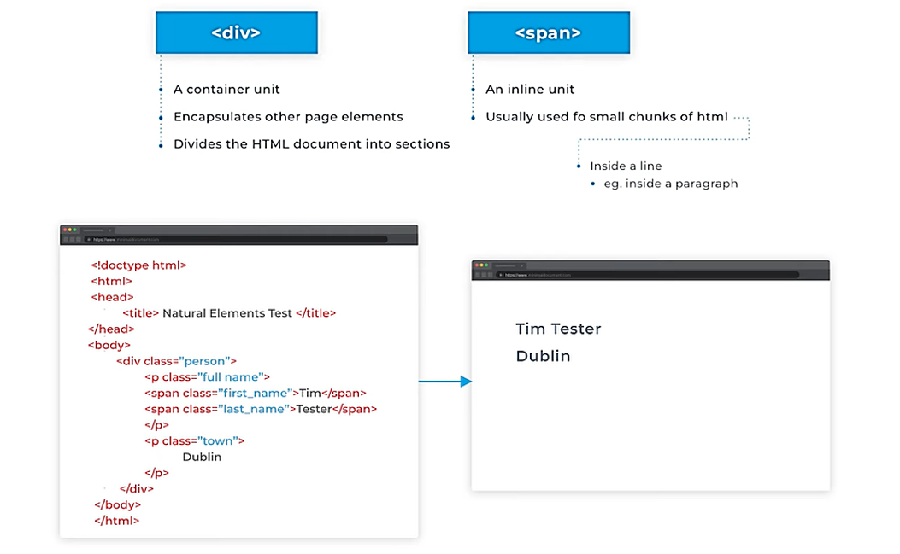
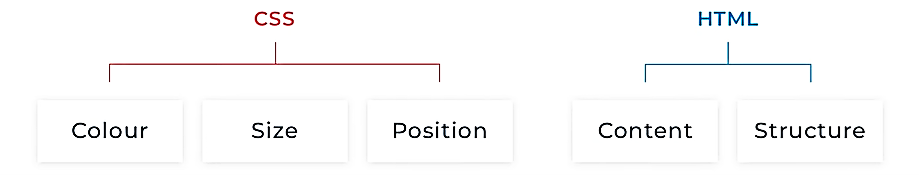
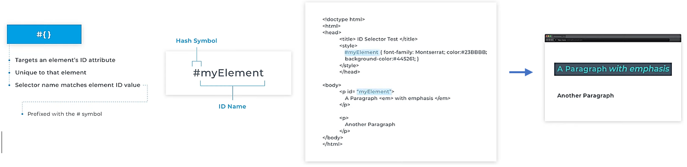
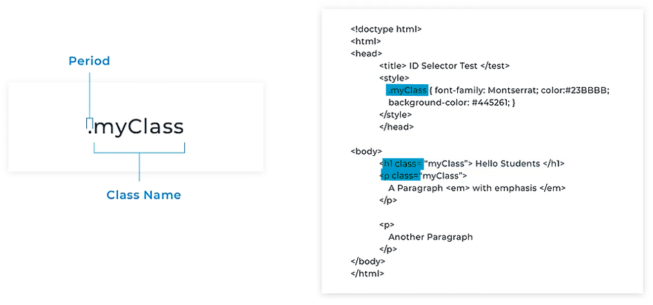

Welcome to Code Diary!
Code Diary is your personal coding knowledge repository and growing reference guide for web development technologies.
This site features comprehensive notes and practical examples on essential web technologies including:
- HTML
- CSS
- JavaScript
- Git
- GitHub
I'm continuously updating this diary with new information and topics to create a valuable learning resource.
Note: Dark mode is currently enabled by default. I'm working on implementing a light/dark mode toggle feature soon—stay tuned for updates!
HTML Notes
Key Concepts: Document structure, tags, elements, and attributes
- Elements are Instructions to the browser. 
- Elements can contain text, but they can also contain other elements
- In the example shown here, we would say the paragraph element contains the emphasis element.
Or we can say that the emphasis element is a child of the paragraph element. - People refer to this as child-parent relationships or nested relationships.
- Any element that contains another element is said to be the parent of other elements.
Those contained elements are called its children. - These elements form a tree structure like a family tree.
- Languages like CSS and JavaScript can access and manipulate this structure to create dynamic and interactive content. 
- The paragraph element is one of the most commonly used elements, and as you might guess it defines a paragraph.
- As with print media a paragraph creates a space above and below it to visually separate it from other content.
- Paragraphs and headings work in concert to create the majority of text content on a web page. 
- HTML has six heading elements, which are numbered 1 to 6. <h1> is the most significant, and usually contains the title of the content. <h2> represents a section, while <h3> and so on represent identifiers for further subsections. 
- Lists can be divided into two types; unordered and ordered.
- Unordered lists display as bullet points. The order of the bullet points is deemed unimportant.
- An example might be the list of ingredients on a recipe.
- However, the order of the recipe preparation steps usually matters. So, we would use an ordered list to represent these instructions. 
- Unordered lists display as bullet points. The order of the bullet points is deemed unimportant.
- Elements that create the spacing below themselves are called block elements.
- Block elements are HTML tags that are used to create a container for a specific type of content. These elements take up the full width of their parent container and create a new block formatting context.
- Examples of block elements include:
- headings (<h1>, <h2>, <h3>, etc.)
- paragraphs (<p>)
- divisions (<div>)
- lists (<ul>, <ol>)
- tables (<table>)
- images (<img>)
- and many more.
- Block elements are often used to create structure and organization on a web page and can be styled using CSS to control the layout and appearance.
- Inline elements are elements that don't cause a line break below their display.
- Take the example shown.
- There's an emphasis tag and a strong tag for italicizing or emphasizing and making something bold.
- The reason why they don't introduce a line break below is that you may want to emphasize or make bold some text within a paragraph in order to stress particular words or phrases, and you'll most often not want to add a line break below the stress text.
- Anchor Element <a> </a> →
- The famous hyperlink element, also known as the anchor, has an attribute that contains the address of the HTML resource that it links to. In HTML content, links that are supposed to be interacted with use the anchor element.
- The anchor element defines an anchor or a specific part of a page that can be linked to and a link ought to go somewhere, so it needs an address.
- To use the anchor element as a link to another page we use the href attribute, which will hold the address of where it needs to go to.
- The href attribute has as its value the location of the page or resource we'd like to link to. In the example shown here, the link when clicked will take us to google.com and in particular Google's 
- Image Element <img> →
- The image tag is used to display an image on a page.
- The image tag is used to define an image on a page. We use the source attribute to link to an image either on our server or somewhere else on the web.
- The image also has what's called an alt attribute.
- It's also considered best practice to include an alt attribute value on any images you use.
- It's because the alt attribute will display any text within the attribute. If the image doesn't load or if a vision-impaired user is using a screen reader to visit your site, the screen reader will read the alt tag. So put a description of the image you're adding in this attribute.
- Neutral Elements <div> <span> →
- Neutral elements such as a div and a span are also included.
- Not everything can be marked up as semantically as a paragraph or as emphasized text.
- Sometimes, an element is needed to group other elements or to allow other information to be attached to a part of a document.
- div and span are intentionally semantically neutral. That is, they don't mean anything in themselves other than helping to identify structural areas on a page.
- But they can be given meaning to the use of CSS.

- Neutral elements such as a div and a span are also included.
- HTML Entities →
- An HTML entity is a piece of text ("string") that begins with an ampersand (&) and ends with a semicolon (;). Entities are frequently used to display reserved characters (which would otherwise be interpreted as HTML code), and invisible characters (like non-breaking spaces). You can also use them in place of other characters that are difficult to type with a standard keyboard.
- Some special characters are reserved for use in HTML, meaning that your browser will parse them as HTML code. For example, if you use the less-than (<) sign, the browser interprets any text that follows as a tag.
- To display these characters as text, replace them with their corresponding character entities, as shown in the following table.
Note: Many characters have memorable entities. For example, the entity for the copyright symbol (©) is ©. For less memorable characters, such as — or —, you can use a reference chart or decoder tool.Character Entity Note & &Interpreted as the beginning of an entity or character reference. < <Interpreted as the beginning of a tag. > >Interpreted as the ending of a tag. " "Interpreted as the beginning and end of an attribute's value. Non-breaking space Commonly used to add extra spacing between words or to prevent text from wrapping to the next line. The HTML entity (non-breaking space) is a character used to create a space in a line of text that cannot be broken into a new line. This is useful for preserving the appearance of text or preventing unwanted line breaks in certain situations.
As the size of the window decreases, the text in the quote will stay on one line, preserving its appearance. If the text inside the quote is too long to fit on one line, the whole quote will move to the next line.
CSS Notes
Cascading Style Sheets →
Four ways to include CSS in HTML →
- Inline CSS: This is the most basic and simplest way of including CSS in HTML. You can use the "style" attribute
to add CSS styles to specific HTML elements.- When using internal CSS, all the elements that match the CSS selector
(in this case, the<p>elements) will have the specified styles applied to them.
HTML <p style="color: blue;">This is an example of inline CSS.</p> - When using internal CSS, all the elements that match the CSS selector
- Internal CSS: You can also include CSS inside the head of your HTML document using the "style" tag.
This is useful when you want to apply styles to multiple elements within a single HTML file. - External CSS: You can also create a separate CSS file and link it to your HTML document using the "link" tag.
This is useful when you want to apply the same styles to multiple HTML files.- When using external CSS, all the elements that match the selectors in the external CSS file will have the corresponding styles applied to them.
The external CSS file is linked to the HTML document using the link tag, which should be placed in the
<head>section of the HTML document.
HTML <!--This is an example of linking an external CSS file-->
<head>
<link rel="stylesheet" type="text/css" href="style.css">
</head>CSS /*This is an example of an external CSS file*/
p {
color: blue;
} - When using external CSS, all the elements that match the selectors in the external CSS file will have the corresponding styles applied to them.
The external CSS file is linked to the HTML document using the link tag, which should be placed in the
- CSS in Javascript: You can use JavaScript to apply CSS styles to elements, this is useful in dynamic webpages that change often.
HTML <p id="example">This is an example of CSS in JavaScript.</p>Javascript //This is an example of applying CSS using JavaScript
var element = document.getElementById("example");
element.style.color = "blue";
| HTML |
<head> |
ID Attribute →
- HTML elements can have what are called attributes these are additional pieces of information that describe an element and all elements can be uniquely identified on a page by means of an ID attribute.
- So why would you want to do this well you might have a button on your page that acts as a call to action maybe it's an invitation to make a purchase or register on the application, there also might be other buttons on the page.
- In order to make this call to actions, stand out from the others, you don't want to give it its own unique styling,
an ID selector working with an elements ID attribute let you do just this. - The ID selector consists of a hash symbol followed by the ID name.
- The example shown we have two paragraphs on our page one of the paragraphs uses its id attribute and assigns a value of my element to the ID.
- We have a style rule in the head of the page, look at the selector name it doesn't refer to any HTML element by type, that is it doesn't refer to a paragraph or a h1 or an image tag, it refers to an ID and if there's some element in the body of that page that matches the ID then that element will be targeted.
- How do we know it's an ID rule? Notice that the selector spelling matches the id value of the first paragraph, but it also adds a hash symbol to the beginning of the ID name.

Class Attribute →
- Class attribute don't have to be unique throughout the document.
- Class attribute don't have to be unique throughout the document.
- The example shown in the approach is similar to what we saw when styling an ID selector, the difference is that we place a period rather than a hashtag in front of the selector name.
- We also use the class attribute instead of the ID attribute.
- Two things to note here though the first is that different element types can be part of the same target class.
- Here we are applying the same style to a heading and the paragraph secondly there's nothing stopping us from using the ID and the class attributes on the same element.
- An element may share styles in common with some others but might also require some added uniqueness.

Display Modification →
Responsive Design →
- Responsive design is the process of building a website that will automatically adjust and adapt to the screen size of whatever device the user is on.
- Current websites must have the ability to optimize the screen size of a device, whether it is a desktop, a laptop, tablet, or mobile phone.
- As screen sizes become smaller, content starts to take up more vertical space.
- And anything wider than say, a desktop screen is usually pushed down when viewed on smaller devices, it's called flow.
- The viewport can be a desktop, mobile screen, or anything in between.
- So, we need units that are flexible and work everywhere. That's where relative units like percentages come in handy.
- For example:
- Setting an image to 600 pixels wide will result in it being too big to be shown properly on a smartphone screen.
- But setting the image to be, say 50%, means it will always take half the screen no matter what device it is displayed on.
- For example:
- Breakpoints allow the layout to change a predefined point.
- For example, you might have 4 columns of content visible on a desktop or laptop but only one column displayed on a mobile device.
- Breakpoints in responsive web design are browser widths that have what are called media query declarations.
- These change the layout once the browser is within a defined range.
- Once a breakpoint or browser width is reached, we can activate a set of styles that are targeted for that particular window size.
- Sometimes, it's practical that content takes up the whole width of the screen, like on a mobile device. But having the same content stretching to the whole width of say your TV screen, often makes less sense.
- This is why min and max values help.
- For example, having a width of a hundred percent combined with a max width about 1000 pixels would mean the content will fill the screen up to a width of 1000 pixels.
Javascript Note
- JavaScript is a programming language that lets you enhance your HTML with animation, interactivity, and dynamic visual effects.
- It can make web pages more useful by supplying immediate feedback.
- For example →
- A JavaScript powered shopping cart can instantly display a total cost, with taxes and shipping, the moment a visitor selects a product to buy.
- JavaScript is used when determining whether the credit card details you entered are valid before transferring those details across the net to the bank for processing.
- For example →
- JavaScript is now the language of the web.
- HTML and CSS are concerned with how something is displayed, but JavaScript can make logical decisions.
- Web browsers are built to understand HTML and CSS and convert these languages into a visual display on the screen. To do this, the browser uses what's called a layout or rendering engine.
- This is the part of the web browser that understands HTML and CSS.
- A browser also contains what's called a JavaScript interpreter.
- This is the part of the browser that understands JavaScript and can execute the steps of a JavaScript program.
- A web browser is usually expecting HTML where we specifically tell the browser when JavaScript is included.
- To do this, we use the <script> tag.
- This is similar to the <style> tag used in CSS.
- And also, like CSS, JavaScript can be included in the <head> element or accessed from an external file.
- JavaScript doesn't have to be confined to the <head> element though. You can insert script elements in the body area too - creating islands of behaviour, or functionality, throughout the page.
Git Notes
Write Notes regarding Git
Github Notes
Write Notes regarding Github